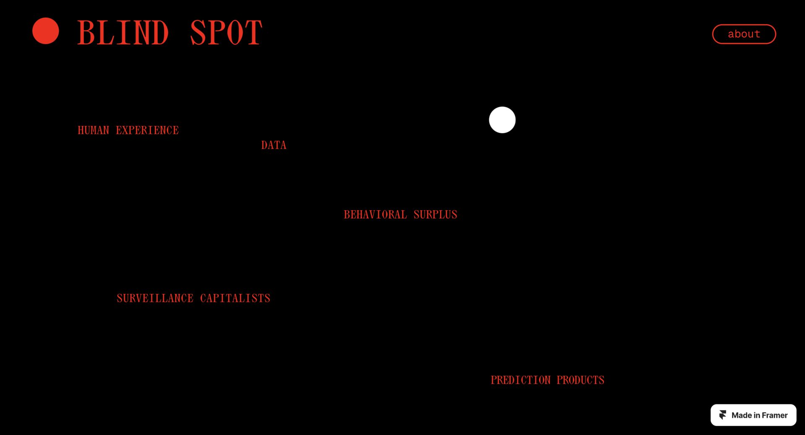
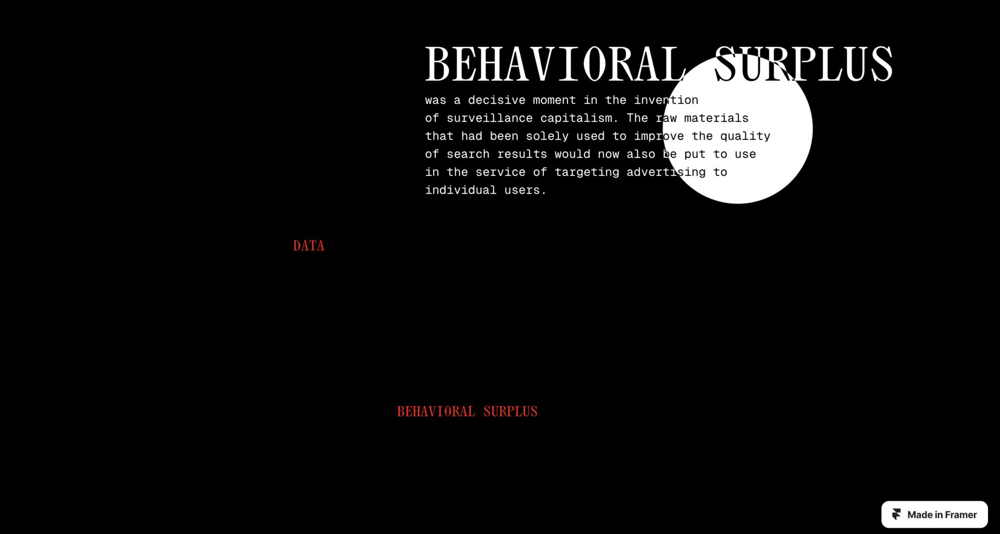

Communication Design III · Critical Design · FBAUL · 2024
Blind Spot
The brief said: make a list.
We made a list that watches you back.
The Brief
In December 2024, our Communication Design III course gave us three weeks and a deceptively open brief: take an existing work as your foundation, extract a list or enumeration from it, and translate it into a webpage. The theme was truth, post-truth, and the blurring of reality in the post-digital age.
Most groups reached for the obvious references. We chose Shoshana Zuboff's The Age of Surveillance Capitalism — a 700-page academic book about how the digital economy extracts, predicts, and sells human behaviour. Not the obvious choice for a three-week student project. But Zuboff's book does something specific that made it the right one.
The book names 12 mechanisms through which surveillance capitalism operates — from Behavioral Surplus to Big Other. Then it argues that most people have never heard these names. The system depends on that ignorance. That gap between what exists and what's known became our design problem.
The Argument
Making the invisible visible
Most websites about surveillance capitalism tell you what it is. We wanted to make you feel it.
Zuboff's 12 concepts aren't abstractions. Behavioral Surplus. Surveillance Assets. Prediction Products. These are names for things already happening to you every time you open a browser. The book's argument is that naming them is the first step toward resistance — and that most users have been systematically kept from knowing the names.
So the design question became: how do you build a website whose form makes the same argument as its content?
The form is the argument
We structured the site as an enumeration of the 12 concepts — exactly as Zuboff presents them, in order, each one building on the last. The visual identity departs from absence: black background, red typography, maximum contrast. A palette that signals warning before a single word is read.
But the visual identity alone wasn't enough. The argument needed to live in the interaction itself.

The Interaction
To see without being seen
The titles of all 12 concepts are visible from the start — in red, against black. But their meaning, Zuboff's own words, only surfaces when the user hovers over them. A white circle expands from the cursor position, revealing the text beneath it.
Move away, and the meaning disappears. The content exists. It is technically visible. But it remains opaque until someone actively chooses to look — exactly like the data extraction mechanisms the site is documenting.


The friction debate
The hover reveal raised a genuine design conflict early on. Every HCI principle points in the same direction: reduce friction. Make content accessible. Don't make users work for information.
But here, the friction was the argument. We were building a site about a system that deliberately obscures its own mechanisms — and making the content effortless to access would have undermined the very claim we were trying to make. We kept the friction. We defended it in our presentation. The professors pushed back on it, which was exactly the right response.
Usability and conceptual integrity were in direct conflict, and we chose the concept. The difficulty of accessing meaning is part of the experience — it replicates something real about living inside the system the site documents.
The Build
Building in Framer
My role in this project was the full technical construction of the site in Framer — translating the team's concept and visual direction into a working, interactive website. This sounds more straightforward than it was.
The hover reveal — a white circle expanding from the cursor to surface hidden text beneath it — required many iterations before it worked correctly. Framer's built-in interaction toolkit wasn't built for this level of spatial precision. The circle needed to expand from exactly the right position, track the cursor, and transition between states in a way that felt inevitable rather than mechanical.
The solution required going beneath Framer's drag-and-drop layer and writing React code directly inside the tool — custom code overrides controlling the component's state and animation logic. It was the first time I worked this way, and it changed how I think about no-code environments: not as limitations, but as platforms with deeper layers available to anyone willing to reach for them.
Three decisions that shaped the site
-
01
Hover reveal via React code override
Framer's native interactions couldn't achieve the spatial precision the concept required. I wrote a custom React code override to control the circle's expansion timing, cursor-tracking, and state transitions — the mechanic that makes the entire argument work.
-
02
Navigation that preserves the cumulative argument
Zuboff's 12 concepts build on each other — the reading order matters. I structured the navigation so users could move freely between concepts without losing the cumulative logic, while keeping the architecture flat: one level, anchor links, no nested pages.
-
03
Entry animation as orientation
Before any interaction is possible, the 12 titles appear in sequence — establishing the visual language and the scale of what's hidden before the hover mechanic is introduced. The animation isn't decorative. It's the first layer of the argument.
Reflections
Blind Spot was the first project where I had to hold two contradictory design principles at once and make a conscious choice between them. Every course teaches that good design reduces friction. Here, friction was the point. Defending that decision — in front of professors who challenged it — was more valuable than any technically smooth outcome would have been.
It also introduced me to critical design as a practice: the idea that a digital artefact can carry an argument, not just display information. The way something behaves is itself a claim about the world. That's something I've carried into every project since.
The hover mechanic is entirely inaccessible on touch screens — which creates an unintended irony. A site documenting the invisible infrastructure of surveillance capitalism is least accessible on mobile, the platform where most surveillance actually happens. In a future iteration, I'd explore how to preserve the conceptual tension of progressive disclosure while making the experience available across devices: perhaps a tap-to-reveal interaction, or a secondary mobile-specific reading mode.
What I learned
-
→
Design can take a position. The way an interface behaves is itself an argument — not just a container for one.
-
→
No-code tools have code underneath. Reaching for it — writing React directly inside Framer — was what made the project possible.
-
→
Friction is a design choice, not a failure. The difference between bad friction and intentional friction is whether you can defend it.